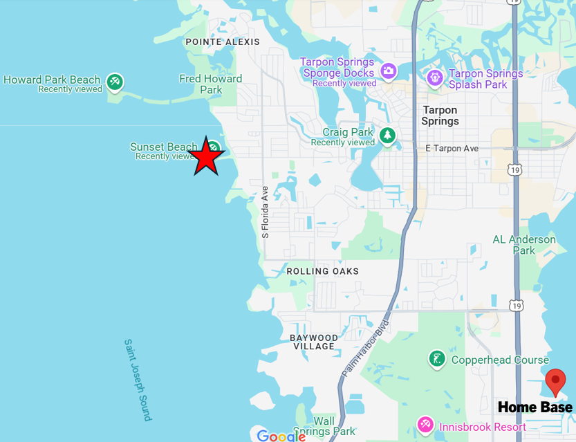
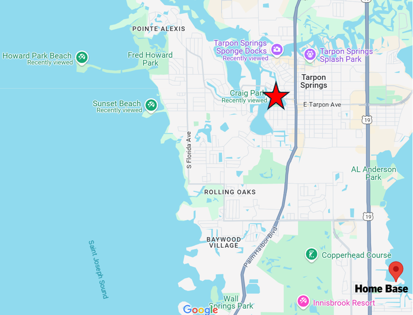
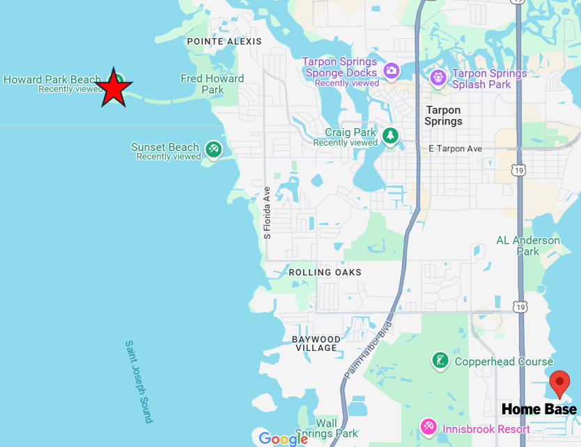
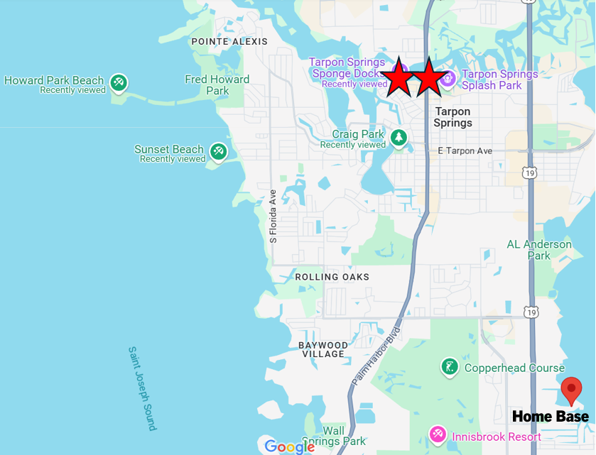

Challenge 1: Watch the Tarpon Spring
40 points
(video)

Tarpon Springs is said to have gotten its name in 1876 when Mrs. Ormond Boyer stood on the bayou and exclaimed, “Watch the tarpon spring!” She was likely seeing mullet and not tarpon, so for this challenge, you must take a video of any fish in any natural body of water.
Challenge 2: Shop Like a Local
10 points
(receipt)

Go to any Publix and acquire a Publix Bakery item priced at exactly $3.99. Every team member must go inside the store.
Challenge 3: Dig a Lucky Hole at Sunset Beach
30 points
(picture)
Go to Sunset Beach. Once there, roll a die, multiply the result by two, and dig a hole that size in inches.
Challenge 4: Return a Sea Sponge
20 points
(picture or video)
$ Pay for parking! $
Tarpon Springs is known as the Sponge Capitol of the World. Acquire a natural sea sponge from the Tarpon Springs Sponge Docks and return it to a natural body of water. (Since this is potentially illegal, also take it back out of the water and keep it.) Simple submersion counts.
Challenge 5: Celebrate Epiphany at Spring Bayou
20 points
(picture)
Tarpon Springs is well known for its Epiphany Celebration, in which the archbishop blesses the waters and boats in Spring Bayou, and a cross is tossed into the water. Young men dive into the water behind it, and the man who retrieves the cross is said to have many blessings for that year. Go to Craig Park at the Tarpon Springs Bayou and construct a cross of at least 1 ft. x 2 ft. from sticks, rocks, and/or leaves.
Challenge 6: Clean Up Howard Park Beach
50 points
(pictures)
$ Pay for parking with the app! $
Howard Park Beach juts into the Gulf of America from a mile long causeway. Because of this, it was struck heavily by Hurricane Milton and only reopened at the beginning of 2025. Go to Howard Park Beach, find 5 pieces of trash, and throw them away.
Challenge 7: Celebrate the Greek Revolution
40 points
(pictures)
$ Pay for parking! $
On March 25th, Greece celebrates its independence from the Ottoman Empire in 1830. Every 4th Sunday of March, Tarpon Springs celebrates Greek Independence Day with a parade. Find and buy a miniature Greek flag and hold it while marching from Alt 19 (Pinellas Ave) to the Sponge Docks trading center along Dodecanese Blvd.
Map link takes you to the start of the march. Click here to complete the march!